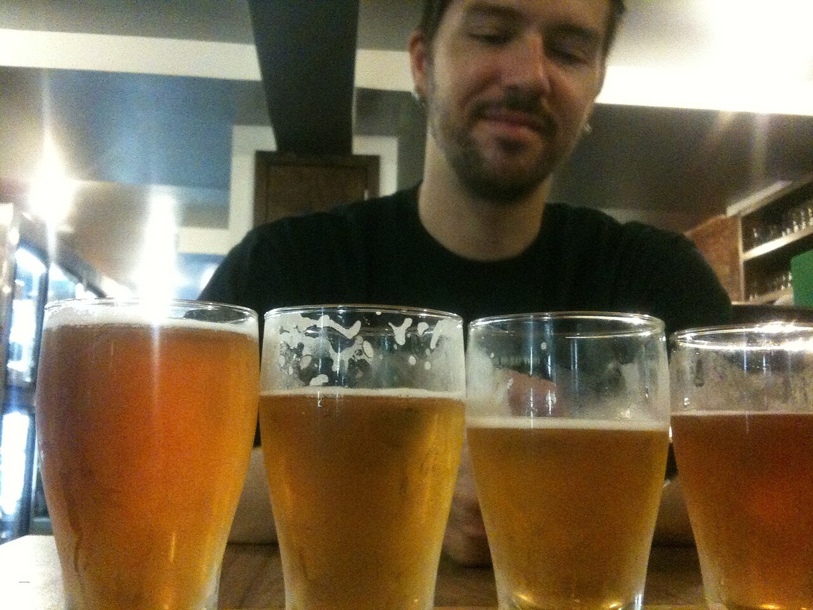
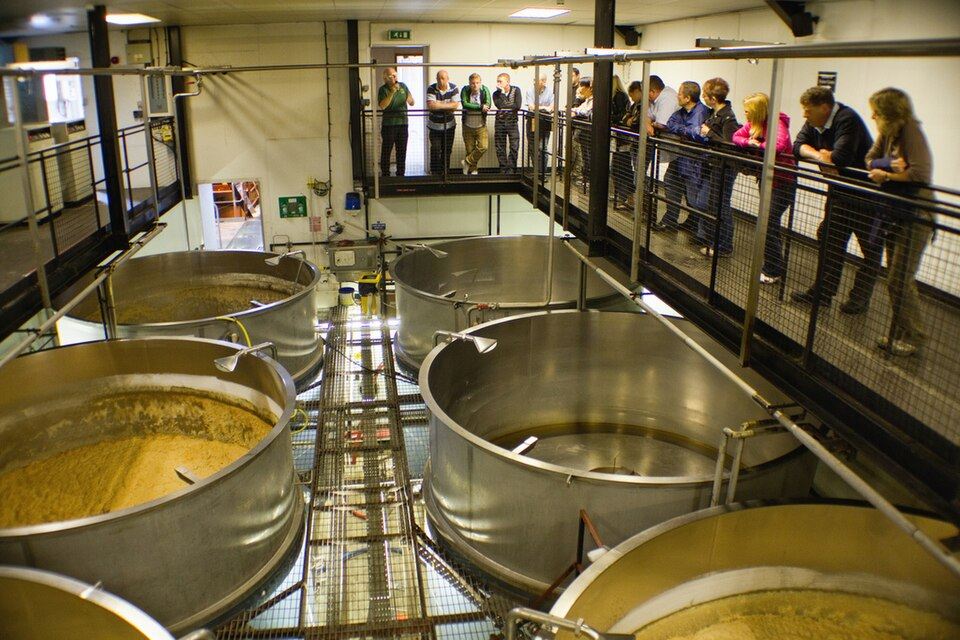
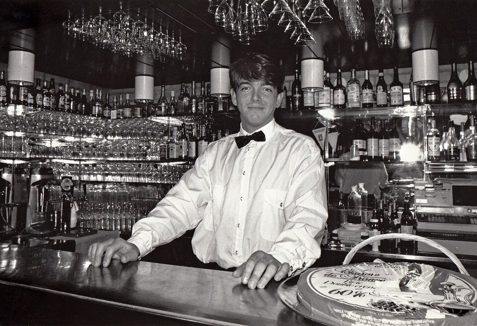
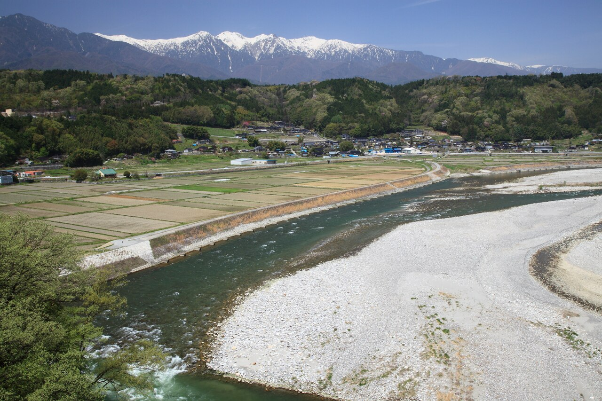

いま注げる10種
11月9日の時点の10本です。左から軽い順に並べています。
10番はノンアルコール。樽が空いたら、次の樽に替えます。
1
麦ノ平ピルスナー
ピルスナー・4.8%
ハーフ 240ml550円
パイント 470ml900円
11月2日開栓。麦芽は村の畑の二条大麦を3割。
| 名前・スタイル | 度数 | ハーフ | パイント |
|---|
ハーフは 240ml、パイントは 470ml です。4種を 120ml ずつの飲み比べは 1,400円。
9番は度数が高いので、小さいグラス（200ml）だけです。

麦ノ平の店と人ではありません。

写真はイギリスの醸造所の見学（TJ Blackwell／CC BY-SA 3.0）。
麦ノ平の仕込み場は、この写真よりずっと小さな部屋です。
醸造の日の見学
月に2回、土曜の朝に仕込みをします。
その日だけ、仕込み場に入って見られます。
11月21日（土）
仕込むのは 6番 二条大麦IPA
12月5日（土）
仕込むのは 1番 麦ノ平ピルスナー
12月19日（土）
仕込むのは 8番 炭焼きポーター
- 時間
- 10:00〜11:30（タップルームは12:00から）
- 定員
- 1回8名
- 料金
- 1,500円（税込。ハーフ1杯かノンアル1杯つき）
- 申し込み
- 前日18時までに電話か店頭で。中学生から（20歳未満はノンアル）
- 服装
- 床がぬれているので、すべりにくい靴で
- 10:00ろ過
麦汁を取る - 10:30煮沸
ホップを入れる - 11:00発酵タンクの
部屋 - 11:15タップルームで
1杯

写真は1992年、スウェーデン・マルメのバー（Jonn Leffmann／CC BY 3.0）。
麦ノ平の人ではありません。
営業日と時間
- 月定休日祝日は営業
- 火定休日祝日は営業
- 水16:00–22:00L.O. 21:30
- 木16:00–22:00L.O. 21:30
- 金16:00–22:00L.O. 21:30
- 土12:00–21:00L.O. 20:30
- 日12:00–21:00L.O. 20:30
席カウンター8席、テーブル20席。予約は6名からだけ受けています。
年末年始12月30日（水）〜1月3日（日）は休みます。
持ち帰り1番・6番・10番は、1Lの瓶に詰めて持ち帰れます（瓶代 300円）。
食べものソーセージ・村の豆腐の燻製・ポテトなど。持ち込みはご遠慮ください。
車で来る人へ
駅から遠い村なので、車で来る人が多い店です。
運転する人には、お酒を出しません。
運転する人は、入口で札を受け取ってください
札を首にかけた人には、ノンアルコールの1杯目を無料で出します。帰りに札を返してください。
- 10番 麦のソーダ（0.0%）小 / 大350円 / 500円
- 自家製ジンジャーエール450円
- 沢の湧き水の炭酸水300円
- 麦茶（ポットで）無料
運転代行は、店から呼びます
飲んだあとは、運転代行で車ごと帰れます。村には代行の会社が2社あり、店から電話します。21時半までに声をかけてください（土日は20時半まで）。代行は車2台で来て、1台があなたの車を運転します。
料金のめやす（代行の会社に払います）
- 村の中2,500円
- 日影沢駅まで（9km）3,500円
- 日影沢IC まで（16km）4,800円
駐車場は店の前に7台。満車のときは、村の駐車場（徒歩3分、無料）へ。

写真は長野県中川村の眺め（Tomio344456／CC BY-SA 3.0）。麦ノ平は架空の村で、この写真の場所ではありません。
行き方
- 駅日影沢駅で降りる駅前のバス停 2番のりば
- 18分村営バス 麦ノ平線1時間に1本。運賃 300円
- 2分「麦ノ平」で降りて歩くバス停の向かい、麦わら色の壁の建物です
平日 19:42 土日祝 18:50
車で
日影沢IC から県道で25分。店は標高860mにあり、12月から3月は道が凍ります。冬用タイヤで来てください。
日影沢村 麦ノ平 412-3